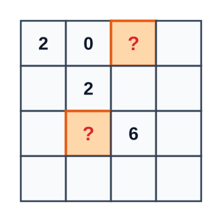

Autoavaliação 2.3.1. O Tabuleiro dos Quatro Dígitos.
- 0
- Incorreto. Nenhuma das casas com '?' pode ser 0 sem violar as restrições da coluna.
- 2
- Incorreto. Isso exigiria que uma casa fosse 2 e a outra 0, o que cria conflito de dígitos.
- 4
- Correto! Ambas as casas marcadas com '?' recebem obrigatoriamente o algarismo 2. Sua soma é 2 + 2 = 4.
- 6
- Incorreto. Uma casa não pode receber 6 e a outra 0 nessa posição.
- 8
- Incorreto. Para somar 8 seriam necessários dois 6 e 2, ou valores maiores que os permitidos.
Constança quer preencher uma tabela quadrada 4 x 4 com os dígitos do multiconjunto {0, 2, 2, 6} de forma que cada linha e cada coluna contenha exatamente um 0, um 6 e dois algarismos 2. Algumas casas já estão preenchidas conforme a figura.

Qual será o valor da soma dos números contidos nas duas casas marcadas com ponto de interrogação (?)?
Dica 1.
Dica 2.
Solução.
Pista 1 (Pista Leve): A soma de qualquer linha ou coluna completa é sempre 0 + 2 + 2 + 6 = 10. Olhe para a linha 1: já temos 2, 0 e '?'.
Pista 2 (Pista Forte): Na linha 1, temos os dígitos 2 e 0. Faltam um 2 e um 6. Olhe para a coluna 3 (onde fica a primeira '?'): a linha 3 já tem um 6! Pode haver outro 6 na mesma coluna?
1. Análise da Primeira Casa com Interrogação (Linha 1, Coluna 3):
Cada linha e coluna deve conter o multiconjunto \(\{0, 2, 2, 6\}\text{:}\)
- Na Linha 1, já temos os dígitos \(2\) (coluna 1) e \(0\) (coluna 2). Portanto, as colunas 3 e 4 devem receber os dígitos restantes: um \(2\) e um \(6\text{.}\)
- Agora olhe para a Coluna 3: a Linha 3 dessa mesma coluna já possui o dígito \(6\) fixado!
- Como cada coluna pode ter no máximo um único 6, a casa (Linha 1, Coluna 3) não pode ser 6. Logo, ela é obrigatoriamente 2.
2. Análise da Segunda Casa com Interrogação (Linha 3, Coluna 2):
- Na Coluna 2, a Linha 1 já tem \(0\) e a Linha 2 já tem \(2\text{.}\) Faltam um \(2\) e um \(6\text{.}\)
- Na Linha 3, já temos o dígito \(6\) na Coluna 3! Logo, a Linha 3 não pode receber outro 6.
- Assim, a casa (Linha 3, Coluna 2) também deve ser obrigatoriamente 2.
3. Soma Final:
\begin{equation*}
?_1 + ?_2 = 2 + 2 = 4.
\end{equation*}